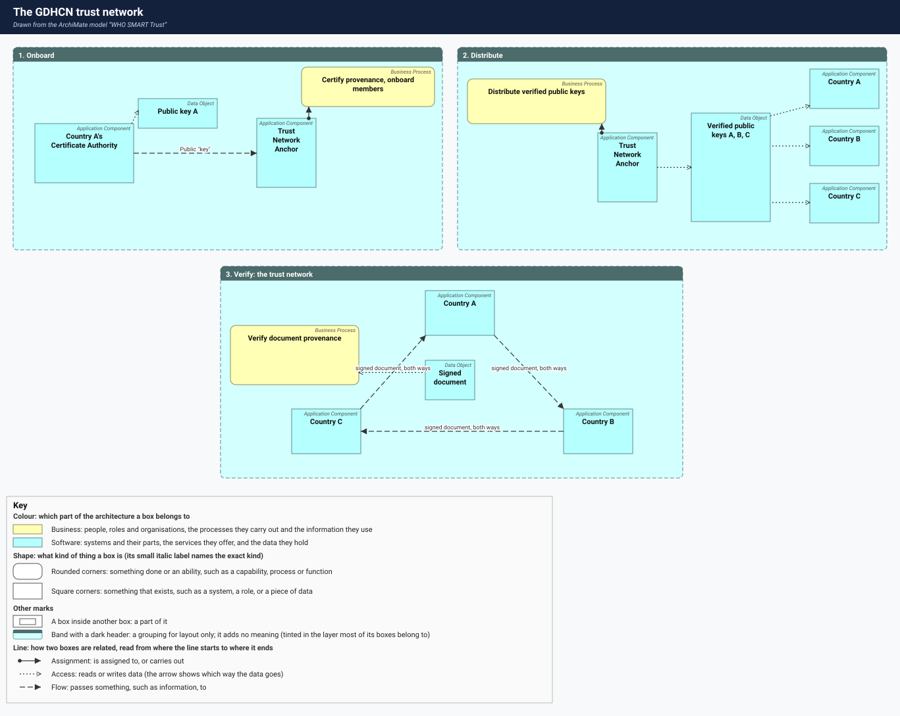

机器翻译——未经人工审校
本页面为自动翻译。尚无任何人审校或裁定此译文，可能存在错误。以源语言页面为准。 阅读原文（英文）
Machine translation — not reviewed by a person. Read the original (English)
摘要
本指南描述了世卫组织（WHO）全球数字健康认证网络（GDHCN）的规范和入网程序。GDHCN 是一种机制，用于支持对 GDHCN 参与方之间交换的健康文档和证明进行验证。这些健康证明可以包括 COVID-19 证书、常规免疫接种卡，以及符合国际患者摘要标准的家庭保存记录。该机制提供了协调全球卫生协议标准的手段，并为连续性医疗和入境口岸建立数字证书认可体系。GDHCN 旨在利用各管辖区在 COVID-19 应对中已有的投资，并提供未来流行病和大流行应对韧性所需的数字健康基础设施。
GDHCN 是世卫组织（WHO）与会员国之间已有信任的数字化体现。GDHCN 是一个数字信任网络，基于经过验证的概念，这些概念用于描述建立信任的规范和机制，使合格参与方能够建立新的信任域，以交换可验证的数字健康记录。信任网络的合格参与方可以按照入网流程申请加入。GDHCN 依照《GDHCN 行政与运营框架》运行。


本指南 ArchiMate 模型中的该视图。
如需亲身体验加入过程，请玩Join the Network：这是一个模拟游戏，一个示例国家按照加入流程，一步一个选择地加入 GDHCN。
背景与目的
为应对 COVID-19，世界各国政府和组织已开发并采用了用于创建、出示和验证数字疫苗接种凭证和检测凭证的标准和技术。然而，目前尚不存在一个全球技术框架，能够使这些凭证在系统之间便捷使用和互操作，同时允许各国自主决定其使用方式，而这样的框架是迫切需要的。
世卫组织（WHO）全球数字健康认证网络是一组用于验证可互操作数字健康文档或证书的组件。该系统由三个主要部分组成：
一组定义明确的数字健康文档，由 GDHCN 成员签发和验证；一套公钥基础设施（PKI），用于发布和分发验证这些数字健康文档的数字签名所用的公钥。
一个知识库，用于维护元数据，包括术语编码、产品代码和业务规则，以实现这些数字健康文档的语义互操作性
除验证和校验 COVID-19 证书外，GDHCN 这样的全球数字健康信任网络还可以：
为世卫组织（WHO）通过 SMART 指南工作发布的经数字签名的临床算法建立信任。支持建立可信医疗产品和器械的全球产品目录。确保无论身处世界何地，患者信息都能被访问和信任。支持卫生系统韧性，以应对世界上未来的疫情暴发。增强个人管理自身健康和福祉的能力。
在可信环境中以可互操作的方式交换健康信息是一项复杂的任务，涉及的利益相关方（例如公共卫生机构、经认可的实验室、边境管控组织、获授权进行验证的机构）越来越多，他们需要确保数据得到安全可靠的传输、健康内容可互操作，且信息可理解、可据以采取行动。本指南详细说明如何利用全球技术框架实现健康凭证在系统之间的互操作性，同时保留各国对其使用的自主权。
实现健康证书的全球互操作性，并不要求所有管辖区使用同一标准。如果预先建立了相应机制，使一个管辖区签发的证书能够在另一个管辖区得到接受，同样可以实现互操作性。为满足建立互操作性和信任体系的特定标准，已开发了多项服务和技术工件，包括：
数据模型、转换和词汇定义，使健康数据能够在各种标准格式之间交换，在保留管辖区对国内流程自主权的同时，允许管辖区之间重新签发和相互认可凭证；在不同网络之间交换公钥以验证健康凭证上数字签名的标准规范；一个全球信任登记系统和联合公钥基础设施解决方案，在区域信任网络之间提供技术互操作性和技术治理；用于创建、共享和执行业务规则的工作流，这些业务规则依据健康数据评估公共卫生政策，以满足跨境或入境口岸的要求；开源工具和技术指导，以减轻为参与联合信任网络而实施技术基础设施的负担，包括供各管辖区实施其自身区域信任网络的开源信任网络基础设施
致会员国的通函
2023 年 9 月 29 日（星期五），世卫组织（WHO）总干事向所有会员国发出通函，鼓励其参与 GDHCN。
- C.L.38.2023（全球数字健康认证网络）- 阿拉伯文
- C.L.38.2023（全球数字健康认证网络）- 中文
- C.L.38.2023（全球数字健康认证网络）- 英文
- C.L.38.2023（全球数字健康认证网络）- 法文
- C.L.38.2023（全球数字健康认证网络）- 俄文
- C.L.38.2023（全球数字健康认证网络）- 西班牙文
受众
本指南描述了信任生态系统中潜在参与者的预期工作流，即：
签发方：向个人提供可验证健康凭证；验证方：使用个人提供的可验证健康凭证；信任网络：在签发方与验证方之间建立信任关系和政策。
本指南的受众包括可能参与联合信任网络的潜在单个签发方、现有信任网络或潜在验证方的决策者、分析人员和技术人员。利益相关方包括会员国、区域网络和标准制定组织。
参与方
可用的信任域
GDHCN 信任域的代码包含在 GDHCN 信任域值集中，并在此处有更详细的说明。
</p>
伦理考虑与数据保护原则
与任何数字解决方案一样，存在需要为技术规范的设计提供依据、并为如何以合乎伦理的方式实施由此产生的解决方案提供指导的伦理考虑（例如对公平和公平获取的潜在影响）和数据保护原则。以下页面讨论了一些关键的伦理考虑和数据保护原则，鼓励会员国在各自部署数字解决方案时纳入这些考虑和原则，并且在负有法律义务的情况下必须纳入。这些伦理考虑和数据保护原则也为世卫组织（WHO）SMART 指南的设计标准以及世卫组织（WHO）全球数字健康认证网络的使用提供了依据。
反馈
针对本实施指南的反馈可通过以下方式提供：
常见问题可在此处查看 点击任一章节标题右侧的“反馈”链接 发送电子邮件至 gdhcn-support@who.int 在 GitHub smart-trust 代码库中创建议题
社区
请在 chat.fhir.org 社区注册，并关注 who-smart-guidelines 频道，以提出与世卫组织 SMART 指南相关的问题、咨询和讨论。chat.fhir.org WHO 还每周举办关于编写和实施世卫组织（WHO）SMART 指南的电话会议，欢迎参加。如需获得邀请，请发送电子邮件至 gdhcn-support@who.int。gdhcn-support@who.int